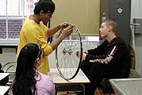

Alternatives to High-Stakes Testing
|

Student Involvement: SOAR

Students from several Consortium high schools have sent more than a thousand letters to Chancellor of the Board of Regents Bennett.
Here is a sample letter:
Chancellor Robert M. Bennett
State University of New York
201 Milwood Lane
Tonawanda, NY 14150
January 15, 2003
Chancellor Bennett:
I am a New York City public high school student and I am writing to express my concern regarding the use of Regents tests to determine whether or not I will graduate from high school. I now know, as a result of recent studies and articles that have been published in major media sources that Regents exams are hypocritical. For instance, in the August 2002 English Language Arts exam, the words of Franz Kafka are distorted. This blurs the intended meaning of the author, creating confusion about the correct answer.
In a paper, if I were to distort the meaning of a passage in the same manner as the SED did on the ELA I would fail. If find it pathetic that the SED is allowed to do things that high school students are taught not to.
You and I both know that these Regents exams are flawed. Examples of this are found on the January 2002 English Language Arts Regents and the June 2002 Physics Regents.
As the Chancellor of the Board of Regents I believe it is your responsibility to protect me and my education. I demand that you call for a moratorium on the use of Regents scores. They should not be a factor in determining whether I graduate or not.
Respectfully,
Student:
Borough:
CC: Memebers of the Board of Regents
Assemblyman Steve Sanders
Senator John R. Kuhl
|  | ||||

|
||||